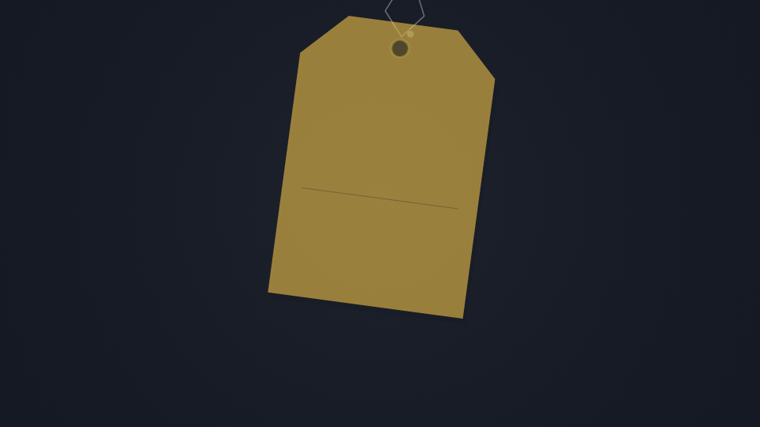
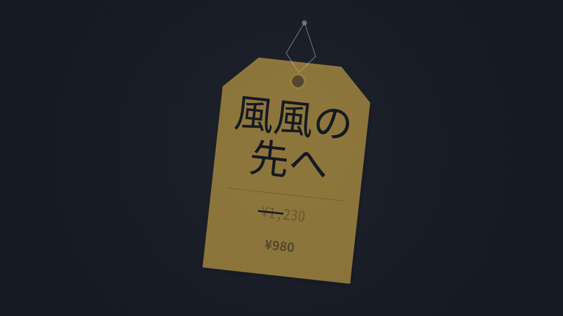
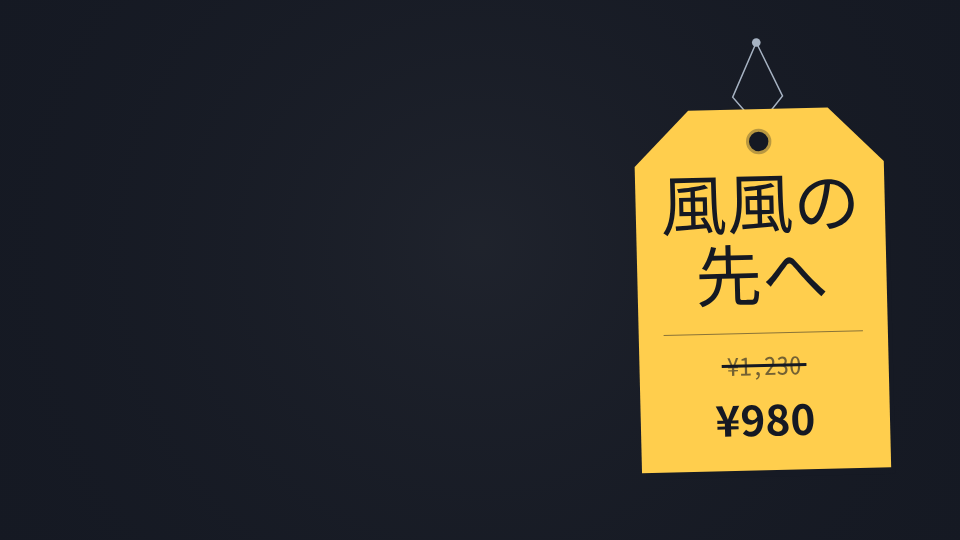
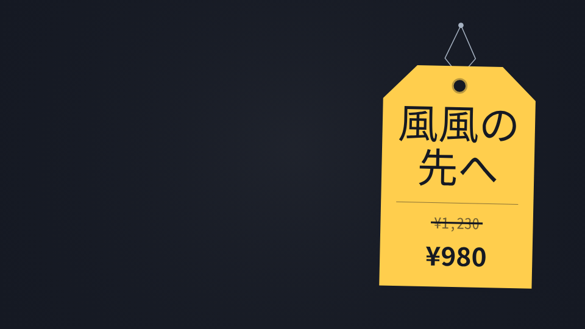
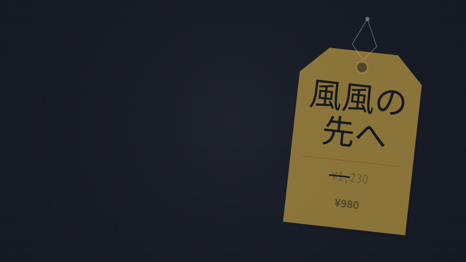

Before: immutable f828 native


After: tested C adapter



960×540; native Canvas96 frames,24fps,4 seconds; identical input, palette, fonts and native clock. Absolute source start12.5s. Circle (.5,.42), r.2; guide is an HTML overlay only.
風 風の先へ / gothic_med / swing+10. After uses native tag dimensions and points, fixed joint offset (+237.75661769271363,0); native loop, pin, paper, shadow, both prices/strike and pendulum entry/exit clocks remain. Eight pinned local fixture faces include the declared production-face substitutions; this is not all production-font acceptance. Physical smaller-tag candidates remain excluded. Independent visual review pending.
Review: paper/loop/pin attachment and native pendulum/drop; complete repeated lyric and both prices/strike; circle clearance during hold; readable original entry/exit crop lifetime. The .7s PNG is an exact standalone source-clock capture, not a rounded24fps frame.




